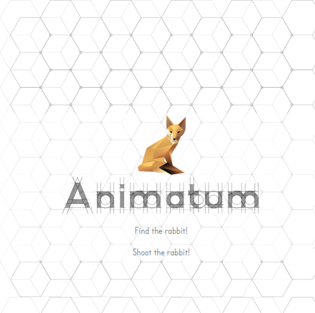

Passionnée de numérique, je suis de près ses révolutions depuis 15 ans.
Formée à SIMPLonMARS, école Centrale Marseille, je m'intéresse tout particulièrement aux bases de données et au design. Riche d'expériences à l'internationale et de postes
à responsabilités, je souhaite à présent relever des challenges, à la recherche du plus haut, plus vite, plus fort.
HTML
Css
Bootstrap
JavaScript
Jquery
PhP
SQL
Wordpress
BabylonJS
Formée à SIMPLonMARS en 2016-2017, cette formation dispensée à l'école centrale Marseille, permet une reconversion professionnelle à des adultes passionnés d'informatique et plus particulièrement du WEB et desireux de participer de manière active
à cette revolution du quotidien.
Intense, rigoureuse et basée sur l'autonomie, elle donne les clefs à chacun d'être acteur du web de demain
J'ai effectué mon stage de formation chez Everdyn specialisée dans l'automation, le developpement informatique et les dashboard d'usine, pour lequek j'ai mis en place un environnement 3D
qui met en evidence les locaux de l'usine et en zoomant ses sous éléments et les datas attachées.
Après deux ans en Australie et en Nouvelle-Zélande, des saisons d'hiver à l'ESF à des postes à responsabilités, en hôtellerie de luxe, ... Mon désir d'une réorientation professionnelle n'efface passe pas mon passé riche qui m'a forgé des qualités
d'intégration, de dynamisme et de remise en question.
Création en équipe de 3 d'un thrombinoscope des élèves avec langages connus et contact (responsif avec utilisation d'un framework)
Projet à quatre de création d'un jeux en JS, recherche d'un lapin par navigation sur une map à la souris
Réalisation d'une scene 3D de visualisation des element d'une usine avec datas